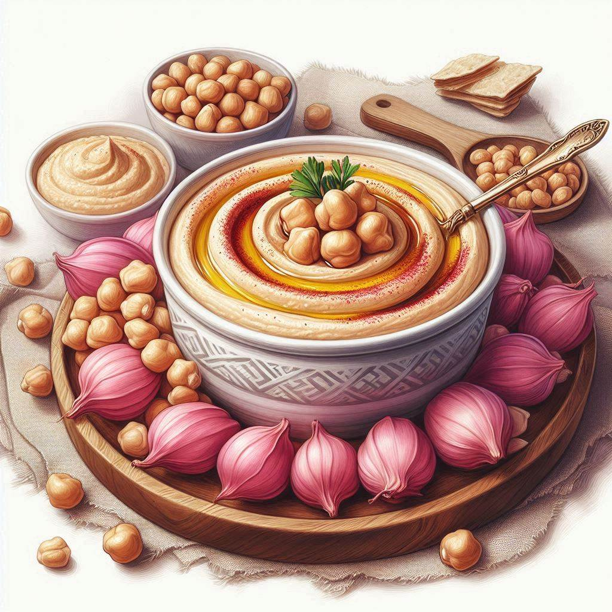

Hummus

Description:
Hummus is a savory dip or spread from the Middle East. It's a creamy blend of chickpeas, tahini, lemon juice, olive oil, and garlic, perfect for scooping up with pita bread or veggies.
Ingredients:
- Chickpeas
- Tahini
- Lemon juice
- Olive oil
- Garlic
- Salt
- Spices
Steps:
- Blend Tahini and Lemon Juice: In a food processor, combine tahini and lemon juice. Process for 1 minute, scraping down the sides as needed, until smooth and creamy.
- Add Remaining Ingredients: Add the chickpeas, olive oil, garlic, salt, and cumin (or your chosen spice) to the food processor.
- Blend Until Smooth: Process for 2-3 minutes, scraping down the sides as needed, until the hummus reaches a desired consistency. You can add a tablespoon of water at a time if the hummus is too thick.
- Taste and Adjust: Taste the hummus and adjust seasonings as desired. Add more lemon juice for tang, salt for flavor, or garlic for a stronger bite.
- Serve and Enjoy!: Transfer the hummus to a serving bowl. Drizzle with additional olive oil and sprinkle with paprika or a spice of your choice for garnish. Serve with pita bread, vegetables, or crackers.